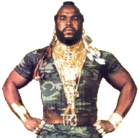
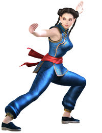

Anexo:Hechos sobre Bruce Lee
 De: La Frikipedia, la enciclopedia extremadamente seria.
De: La Frikipedia, la enciclopedia extremadamente seria.
- Bruce Lee una vez estaba revisando su ático, y había tanto polvo que estornudó sobre un panda, hoy conocido como Po.
- Bruce Lee enviaba toda la energía de cada Genkidama lanzada en Dragon Ball. Como resultado, en la batalla de Goku contra Freezer en Namek, con la energía sobrante fueron destruidas las otras tres galaxias pero Bruce logró reconstruirlas parpadeando.
- El mapa de Piri Reis es la copia exacta de un mapa auténtico hecho por Bruce Lee orinando en la nieve de los Montes Urales.
- Bruce Lee sabe con exactitud la hora, minuto y segundo en que un submarino nuclear ruso pasará por el Atlántico para ser este devorado por Cthulu.
- Los chinos descienden de Huangdi, pero Huangdi desciende de Bruce Lee.
- La teoría de la deriva continental es verídica. Hace millones de años, Bruce Lee estaba jugando tenis cuando un meteorito se le escapó y atravesó la Tierra.
- Bruce Lee asistió al primer cumpleaños de Chabelo.
- Bruce Lee ganó una partida de póker juntando las partes de Exodia.
- Se dice que Bruce Lee pateó a un tipo tan fuerte que éste salió volando y rompió la barrera del sonido. A las 1:23 del 26 de abril de 1986, el hombre surcó el cielo a una velocidad impresionante e impactó contra el reactor 4 de la Central Nuclear de Chernóbil, causando el peor incidente nuclear en la historia. El ejército soviético decidió mantener en secreto la naturaleza de cómo ocurrió este hecho, afirmando que el hombre volador era un OVNI.
- El último objeto en el bolsillo de Doraemon es una foto de Bruce Lee.
- Bruce Lee una vez preparó un chile tan picante que ni él ni Steven Seagal juntos podían comerlo. Después lo comió en el festín de año nuevo.
- El eslabón perdido de Darwyn está perdido porque se le ocurrió desafiar a Bruce.
- Bruce Lee pintó la Mona Lisa con crayones de Roseart.
- Hokuto No Ken es la biografía no autorizada de Bruce Lee.
- La diferencia entre una amenaza y Bruce Lee es que Bruce Lee es inevitable.
- Bruce Lee compra productos a la Marca Líder.
- Hitler se suicidó por miedo a encontrar la mirada de Bruce Lee luego de que los rusos acabaran con su ejército.
- En realidad en el infierno no hace calor, es una gota de sudor de Bruce Lee.
- Adán probó la manzana creyendo que así podría alcanzar el nivel de poder para enfrentarse a Bruce Lee.
- Los científicos tratan de lograr la teletransportación de personas para escapar de Bruce Lee.
- Bruce Lee puede ganarte cualquier partida de damas chinas con el primer movimiento. Jugando con blancas.
- A Bruce Lee no le preocupa si es el cable azul o el rojo, una bomba vigilada jamás se atreve a explotar.
- Bruce Lee se sabe de memoria la Mansión Winchester.
- Nadie mató a Osama Bin Laden. Está jugando a las escondidas con Bruce Lee.
- Bruce Lee salió una vez en TV, pero censuraron su programa porque cada vez que él aparecía el televisor que lo sintonizaba explotaba.
- Bruce Lee lanza shurikens, se les conoce como estrellas fugaces.
- Bruce Lee, luego pienso y después existo.
- Bruce Lee no tiene un diente de oro. El oro se degrada con el tiempo.
- Bruce Lee una vez se levantó con el pie izquierdo, en la cara del Joker.
- En el Antiguo Egipto se creía que los faraones eran deidades porque recibieron una patada de Bruce Lee y vivieron.
- Bruce Lee ya leyó el final de One Piece.
- Bruce Lee no se aprende las artes marciales, las artes marciales se Bruce Lee.
- Bruce Lee no paga la factura eléctrica porque la luz no se atreve a apagarse.
- Bruce Lee ganó en un Rasti.
- Mu y Atlantis son una historia real. Hace más de 11.000 años existían dos pueblos cuyos habitantes decidieron comer un poco de la ración diaria de arroz que a Bruce le correspondía. Bruce les amenazó que si seguían haciéndolo iba a orinar en el polo norte, tras lo que Noé comenzó a construir el arca.
- En el Antiguo Egipto existían el Libro de la Vida, el Libro de la Muerte y el Libro de Bruce Lee. El último aún no se ha encontrado y es porque este fue escondido ya que los personajes de los jeroglíficos pegaban patadas voladoras.
- Bruce Lee era coleccionista de iguanas antiguas, se les conoce como tiranosaurios.
- Una imágen vale más que mil palabras. Que Bruce Lee no te de una patada vale más que un billón de imágenes.
- Mientras estabas leyendo esto Bruce Lee ya contó a ojo los átomos en el Sol.
- Bruce Lee compró bienes raíces en Área 51.
- Bruce Lee armó un rompecabezas para niños, se le conoce como Código Da Vinci.
- "La imaginación es infinita." Ésto es un error. Nadie puede imaginar el dolor producido por una patada de Bruce Lee.
- Cada viernes 13, Bruce Lee va a por Jason.
- Bruce Lee enseñó a Osama Bin Laden a jugar a las escondidas.
- Según Mark Twain, todo lo que la mente humana puede concebir y creer, lo puede alcanzar. Excepto derrotar a Bruce Lee.
- Bruce Lee toca el piano con la guitarra.
- Bruce Lee había pegado una vez una patada a tan alta velocidad que para medir los kilómetros por segundo los científicos tuvieron que inventar un nuevo número, el Bruceleellón.
- Bruce Lee admitió una vez haber empleado drogas durante una pelea... para calmar el dolor de su oponente.
- Cuando se te olvida algo que no puedes recordar, es Bruce Lee cancelando una acción tuya en el Sims.
- Bruce Lee ya sabia el final de Lost con solo ver el título de la serie en el primer capítulo. Y hasta logró entenderlo.
- Los criminales le temen a Kira. Kira teme a Bruce Lee.
- Bruce Lee puede criticar un defecto a Maradona sin que le diga nada.
- Un joven pelirrojo miró feo una vez a Bruce Lee. Se le conoce como Bad Luck Brian.
- A Bruce Lee se le conoce por haber construido el castillo de naipes más grande del mundo. Nimrod, al enterarse de esto, ordenó a su pueblo construir la Torre de Babel. Bruce, en una demostración de piedad, decidió derrumbar la torre con la mirada hirviéndolos en su propia sangre.
- Bruce Lee hizo una versión tan aterradora de la Bruja de Blair que fue censurada en más de 150 países y la película hoy en día está entre los objetos perdidos más buscados por el FBI.
- Jeff The Killer no alcanzó fama hasta que a Bruce Lee no le dio la real gana.
- En realidad no existen los huracanes, es Bruce Lee tirandose pedos.
- Bruce Lee completó la carrera de astrofísica y la de ingeniería informática en dos meses y medio, de los cuales pasó 62 días haciendo manuales de cómo hundir submarinos rusos, aviones alemanes y cazas estadounidenses con el dedo meñique.
- Los creepypastas tienen miedo de siquiera mencionar el nombre de Bruce Lee frente al espejo del baño.
- Bruce Lee puede hacer una caricatura de Mao y el PCCh se calla la boca.
- Bruce Lee sacó una fotografía con la Game Boy Advance.
- De desayuno, Bruce Lee come cereales. Y por cereales comúnmente se entiende trozos de metales intraterrestres en un tazón de acero fundido.
- Es verdad que se puede dar la vuelta al mundo en 80 días. Se dice que un tipo lo hizo en una hora luego de haber mirado mal a Bruce.
- Bruce Lee comió un helado de fuego.
- Bruce Lee puede dibujar un círculo perfecto en una hoja y hallar la cuadratura del mismo.
- Los países no emplean las armas nucleares por miedo a que el bando contrario use a Bruce Lee como respuesta.
- Cada vez que sientes que algo te está siguiendo, y das la vuelta pero no encuentras a nadie, es porque Bruce Lee menciona ese lugar.
- La realidad supera a la ficción. Una patada de Bruce Lee supera a la realidad.
- Bruce Lee puede robarle el balón a Oliver Aton.
- El gas de las bebidas gaseosas es extraído de entre los que fueron evaporizados por las patadas de Bruce Lee.
- Bruce Lee hace casas y torres de departamentos con huesos de emperadores y generales.
- Bruce Lee sabe la raíz cuadrada de -2.
- A Bruce Lee se le cayeron dos rocklets, uno rojo y otro azul. La elección se la dejó a Neo.
- Bruce Lee puede hablar japonés en ruso.
- Hirohiko Araki se inspiró en los dedos de Bruce Lee para crear las poses de Jojo's Bizarre Adventure.
- Bruce Lee tiene un Stargate en la nevera.
- Bruce Lee sabe algo que Akasha no conoce.
- Es vertiginoso para el Empire State saltar de Bruce Lee.
- Jugando basket, Bruce Lee anotó un gol de chilena con un balón de rugby.
- La Salty Spitoon (Escupidera de Salty) no es lo suficientemente fuerte para entrar en el club de Bruce Lee.
- En una batalla, a Bruce Lee se le cayó un Señor de los Anillos en la Tierra Media.
- Bruce Lee tocó la cara de los Intocables.
- Bruce Lee una vez se sacó los dos brazos con una mano
- Parte del kit de supervivencia del ejército es llevar banderas blancas en caso de enfrentarse a Bruce Lee.
- Bruce Lee forjó una espada más caliente que el Sol.
- Bruce Lee en idioma chino quiere decir "Muerte".
- Bruce Lee puede hacer un cuadrado cuyos ángulos interiores sobrepasan los 90º.
- Slenderman no ha juntado aún todas las anotaciones. Bruce Lee acecha...
- You're not sexy and Bruce Lee knows it!
- Para Bruce Lee nada es un desafío. Todo es fácil como el cubo de Rubik de 1x1.
- El shampoo perfecto para el cabello de Bruce Lee es el ácido fluorhídrico.
- A veces, la lava juega a que el piso está hecho de Bruce Lee.
Hechos sobre Bruce Lee en los mundos de los vidriojuegos
- En Call of Duty Modern Wafare 3, Bruce Lee una vez lanzó un cuchillo al cielo. Como resultado cayó un caza, se desplomó un rascacielos de 110 pisos, ocurrió un maremoto, y murieron 10 soldados en Battlefield 4.
- Bruce Lee tomó tanto alcohol en World of Warcraft que su personaje acabó en un coma alcohólico. Se rehabilitó tirándose a Sylvanas Windrunner.
- Un jugador consiguió pasarse el Half-Life en menos de una hora sin guardar la partida. Bruce Lee se pasó el Half-Life, el Opposing Force, el Blue Shift y todos los mods singleplayer a la vez en menos de 14 minutos y le sobró tiempo para matar a G-Man, a sus jefes y esclavizar a los de la Raza X.
- Bruce Lee puede nadar en GTA III
- Bruce Lee pasó por Pueblo Lavanda en Pokemón, desde entonces muchos jugadores que pasan por ese lugar se suicidan.
- Cuando Bruce Lee entra a una partida de Starcraft, los coreanos se desconectan, apagan su ordenador, lo desenchufan y lo tiran al mar.
- En el Pro, si se le roba el balón a Bruce, Kazuki Ito pitará penal a su favor.
- Bruce Lee se pasó el Earthworm Jim 2 sin el Snott.
- Bruce Lee puede tocar sinfonías completas de Beethoven en el Ocarina of Time.
- Bruce Lee se ha pasado el Team Fortress 2.
- Bruce Lee es el único enemigo secreto supremo que no puede ser derrotado con ninguna estrategia ni hack en el Final Fantasy.
- Bruce Lee logró que su Pikachu llegara al nivel 101.
- Si te topas con Bruce Lee en cualquier The Legend of Zelda, accedes a una versión alternativa del juego en que Hyrule es reducido a un desierto.
- Bruce Lee puede chatear con Herobrine y hasta le tiene en el Facebook, y en el Skype.
- Bruce Lee puede hacer colapsar económicamente a un NPC comerciante en el WoW.
- En el Counter-Strike, Bruce Lee siempre lleva consigo una caja. De ella saca municiones, armas de todo tipo, y hasta botiquines para todos sus compañeros.
- Bruce Lee consiguió que Pac-man comiera hasta saciarse.
- Bruce Lee terminó el Super Mario Bros sin saltar.
- En Age of Empires II, cuando una oveja de Bruce pasa por al lado de un explorador, éste cambia de color.
- Bruce Lee dio lecciones de Call of Duty a TheRelaxingEnd.
Frases Célebres y Proverbios Chinos de Bruce Lee
Entre las innumerables frases célebres y refranes flipados que Bruce Lee dijo al mejor estilo laotseano, podemos destacar las siguientes:
«No te establezcas en una forma, adáptala y construye la tuya propia, y déjala crecer, sé como el agua. Vacía tu mente, se amorfo, adaptable, como el agua. Si pones agua en una taza se convierte en la taza. Si pones agua en una botella se convierte en la botella. Si la pones en una tetera se convierte en la tetera. El agua puede fluir o puede chocar. Sé Agua Amigo Mío.»
~ Bruce Lee Demostrando que no solamente sabe decir "Be Water My Friend"
«El hombre, la criatura viva, el individuo que crea, es siempre más importante que cualquier estilo o sistema establecido»
~ Bruce Lee Diciendo que el Ser Humano es mas importante que el Sistema Capitalista que rige al mundo en la actualidad
«Cuando hay libertad del condicionamiento mecánico, hay simplicidad. El hombre clásico es justo lo contrario: un paquete de rutina, de ideas y de tradición. Si sigues el patrón clásico, estás entendiendo la rutina, la tradición, la sombra... no te estás entendiendo a tí mismo ni a la realidad»
~ Bruce Lee Sermoneando sobre las restricciones del Capitalismo, la Matrix, y demás de esos dogmas conservadores que oprimen al hombre
«La fe es un estado mental que puede ser condicionado a través de la auto-disciplina. La fe se puede conseguir»
~ Bruce Lee Diciendo que la religión es un invento del hombre
«Tener el no-camino como camino y la no-limitación como limitación»
~ Bruce Lee Dejando en claro algo que no-quedó del todo claro
«La conciencia no tiene frontera; es una entrega de todo tu ser, sin exclusión»
~ Bruce Lee Pidiéndote que le entregues "todo tu ser", y ya sabes a que me refiero con eso... ;)
«Yo no temo al hombre que ha lanzado 10.000 patadas diferentes, yo temo al hombre que ha lanzado una patada 10.000 veces»
~ Bruce Lee Diciendo que no le teme a Chuck Norris, pero sí le teme a Son Goku
«Lo que no mata... fortalece»
~ Bruce Lee Diciendo la frase que todos le robaron sin darle crédito por haberla dicho primero
«Si vas en búsqueda del Gran Creador, volverás con las manos vacías. El origen del universo es en última instancia incognoscible, un gran e invisible río que fluye eternamente a través de un fértil valle. Silencioso y no creado, crea todas las cosas.»
~ Bruce Lee Diciendo una frase que le robó a Lao-Tse
«La desvalorización del mundo humano crece en razón directa a la valorización del mundo de las cosas»
~ Bruce Lee Diciendo una frase que le robó a Karl Marx
«Sin una organización dirigente la energía de las masas se disiparía, como se disipa el vapor no contenido en una caldera. Pero sea como fuere, lo que impulsa el movimiento no es la caldera ni el pistón, sino el vapor»
~ Bruce Lee Diciendo una frase que le robó a León Trotsky
«Muchachos, la comedia debe terminar y debe comenzar el trabajo serio.»
~ Bruce Lee Diciendo una frase que le robó a Joseph Allen Hynek
«Si ves a alguien ahogarse y sabes nadar, tienes el deber moral de salvarlo, a no ser que sean Bush o Aznar»
~ Bruce Lee Diciendo una frase que le robó a Richard Stallman
«Everybody Lies...»
~ Bruce Lee Diciendo una frase que le robó a Gregory House
«Ante todo, no fijes ninguna regla restrictiva»
~ Bruce Lee Volviendo a decir frases de su propia autoría
«¿Sabes como quiero pensar sobre mí mismo? Como un ser humano. Porque no quiero ser “lo que Confucio dice”, porque bajo el cielo habrá una familia, pero bajo el cielo también sucede que hay personas, y las personas piensan cosas diferentes.»
~ Bruce Lee Desacreditando los valores tradicionales de Confucio, porque prefiere no hacer caso a su familia y pensar lo que se le pegue la regalada gana
«El Jeet Kune Do evita lo superficial, penetra en lo complejo, entra en el corazón del problema y señala los factores clave»
~ Bruce Lee Relacionando al Jeet Kune Do con el Trotskysmo
«Si digo que soy bueno...alardeo. Y si digo que no soy bueno... entonces sabrías que estoy mintiendo»
~ Bruce Lee Fanfarroneándo pero de forma sutil para que no se note.
«El secreto para alcanzar la Inmortalidad es vivir una vida que valga la pena recordar»
~ Bruce Lee Alardeando de su propia fama que ha trascendido hasta a su propia muerte
Bruce Lee dijo éstas y muchísimas otras chorradas frases y proverbios chinos que se las pasaba pregonando y difundiéndolas en cada entrevista televisiva y reportaje periodístico que le hacían, así como también en las revistas Playboy de artes marciales y en los torneos de Karate y Kung-Fu donde iba a promocionar su estilo personal del Jeet Kune Do y a difundir su Filosofía Taoísta mediante fracesillas cursis como las anteriormente citadas.
Enemigos derrotados
Como es sabido, Bruce Lee oficialmente nunca fue derrotado en un combate, y por eso hay un torrente interminable de enemigos que han caído ante sus Puño de Una Pulgada, Patada en los Cojones, y demás técnicas taoístas supersecretas que Bruce desarrolló para hacer de su Jeet Kune Do un arma mortal imbatible que le permitió acabar con todos los enemigos que se le interpusieron en su camino, siendo los más conocidos algunos de los siguientes:
|
|
|
 ¡¡OH NO!!! ¡¡¡Mi hermosa nariz!!! ¡¡¡Pero qué has hecho Bruce!!!  Así le quedó la cara a " Il Cavaliere" luego de la impresionante paliza que le dió Bruce Lee  Mr. T vendió su casa en Malibu para comprar oro para hacerse una armadura dorada como las de Saint Seiya a ver si con eso se protege de los brutales golpes de Bruce Lee. |
Mujerzuelas que han sido penetradas por Bruce Lee
Chun-Li está ahí tirada porque Bruce Lee se la tiró.
 ...Y como se tiró a la original, tambien tenía que tirarse a la imitadora...

¡Que le habrá hecho Kitana a Bruce, que desde entonces ella se cubre la boca para no matar con el aliento!...
Como ya se ha dicho, al Dragón le gustaban mucho las perras y las gatas, así que hubo un sinfín de putas y guarras que han sido cogidas por Bruce Lee. La mayoría de éstas eran sus alumnas pero ellas dejaron el entrenamiento cuando conocieron los "talentos" que Bruce tenía bien guardados y que no les enseñaba a sus otros alumnos, así que de ahí en más muchas decidieron dedicarse a soplar pollas porque eso que les enseñó Bruce les gustó mucho más que su Kung-Fu, pero aun así algunas de las putillas esas siguieron entrenando y por eso se convirtieron en hábiles luchadoras que trabajaban a medio tiempo sobre un ring y el otro medio tiempo en un plató de cine porno; mientras que otras directamente se dedicaron a entregar el culo de tiempo completo:
Hijos famosos de Bruce Lee
El Dragón también fue un prolífico proletario que engendró una cantidad incierta de vástagos herederos de su perfecto material genético, o como decía mi abuela, "chingó tanto que se llenó de críos". Muchos de esos hijos bastardos de la globalización se volvieron muy famosos y llegaron a ser celebridades reconocidas, a pesar de que oficialmente no fueron reconocidos como hijos de Bruce Lee porque la mayoría de ellos fueron fruto de los amoríos extramatrimoniales del Dragón, y por eso no son visto como hijos de Bruce, sino como hijos de p@#%, porque precisamente nacieron de distintas madres que eran esas tantas prostitutas de las que mencionábamos mas arriba, pero aquí en Frikipedia realizamos una labor periodística sin precedentes mejor que la de todos los semanarios amarillistas de la prensa dedicada al espectáculo, y por eso aquí tenemos el banco de ADN que confirma la consanguinidad de muchas celebridades que son retoños de Bruce Lee, siendo que los dos primeros de la lista son los únicos que Bruce tuvo con su esposa Linda Emery, y todos los demás son los bastardos que Lee engendró en sus múltiples affaires:
 Anexos Anexos
|
|
|
Autor(es):
- Fordus
- Marcosantinos
- Likan003
- Shingo
- Johan1234
Frikipedia 2005-2016, Licencia
GFDL 1.2 - Extraído por FrikiLeaks